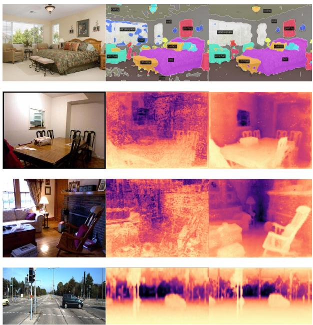
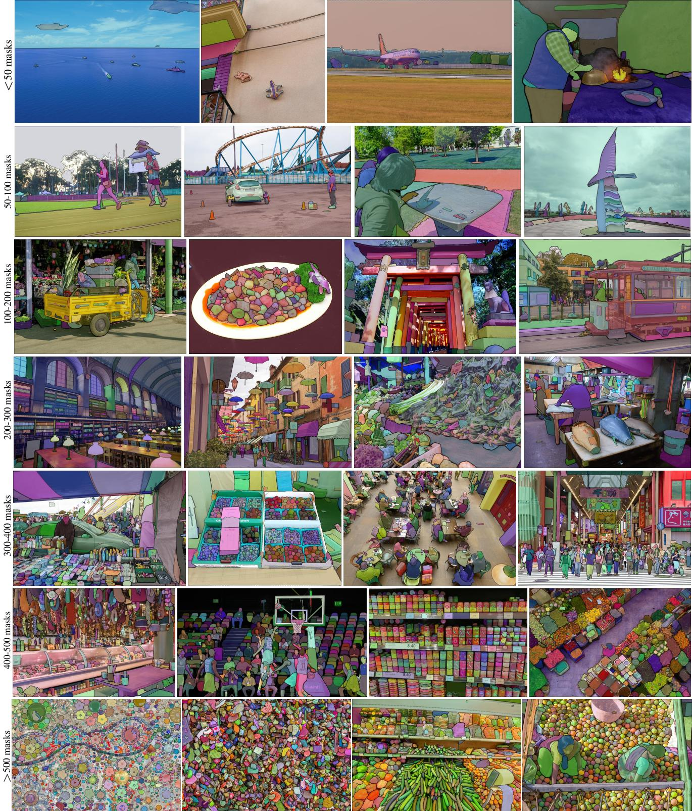

阶段 G · 学习式方法 / Lesson 0151
收官：学习式方法的能与不能
31 篇、24 节课读完了。最后这一节不做新论文，只做一件事——把第一季 0011 那句话的账结清 🧾
🎯 主题：四个战场的分项账目 · 极简之争结账 · 证据与判断分区 · 五个未解问题
📚 覆盖：阶段 G 全季（0128–0150）
📅 2020–2025 · 第七季收官
本节目标
读完你应该能：① 用一张四行的表 说清第一季 0011 那句「深度学习先吃掉匹配与检索」到底兑现了几分；② 说出第一季 0014 的「回环假阳性铁律」在学习式方法下被压住了多少、代价是什么 ；③ 对「复杂与极简」这条暗线给出一个可用的判断准则 ；④ 分清本季哪些结论有论文证据 、哪些只是我的判断 ；⑤ 知道还有哪些问题没被解决 。
和前面课程怎么接
这一节不是新内容，而是把 0128 导览课 埋下的三个悬念逐一回收：那句六年前的判断（0011 ）、那条方法论暗线（复杂与极简）、和那张四个战场的地图。所以最好在读完 0129–0150 之后再回来读它。它还回过头去接第一季 0014 （假阳性铁律）与第三季 0040 （尺度暗线）两笔旧债——那两笔在本季各有一次正面答复（0140 与 0150 ）。
1. 这一季读完了什么
先摆事实。本季处理阶段 G 的 31 篇论文，按「换战场」的顺序排成四块，最后加一节导览与一节收官：
0129–0133 · 匹配
SuperGlue → LoFTR → LightGlue → RAFT → SiLK。把「数据关联」这一步（第一季 0004 ）交了出去。战场一 。
0134–0140 · 检索
DBoW2 → Scan Context 与 ++ → LCDNet + OverlapTransformer → BEVPlace + SeqOT → CricaVPR + SALAD → Hybrid + R²Former → LCR-Net（又答复了 0014 ）。战场二 。
0141–0146 · 位姿
PoseNet + DeepVO → UnDeepVO + TartanVO → DeepSLAM → D3VO → DROID-SLAM → DPVO。战场三 。
0147–0150 · 零件
DINOv2 + SAM → DUSt3R → MASt3R-SLAM → SLAM3R + Metric3D v2。战场四：不再替换某一步，而是变成谁都能调的零件 。
0128 · 导览
立起那句六年前的判断与四个战场的划分，并点出本季的方法论暗线。
0151 · 收官（本节）
不做新论文，只结账：分项账目、铁律复查、暗线判断、证据分区、未解问题。
关于「31 篇」这个数字 ：课表里 0128 与 0151 是导览与收束课，不覆盖论文；其余 22 节课覆盖 31 篇。其中若干篇是「组课」（一节课两篇），因此节数少于篇数。本文提到的每一个技术判断都来自前 22 节课已经核实过的正文 ；本节新增的内容只有两类——把分散的结论合起来看，以及我自己下的判断 （第 5 节会逐条标出）。
2. 正面回答第一季 0011：四个战场的账
第一季 0011 课读深度学习视觉 SLAM 综述时，写下了一句判断：「深度学习先吃掉匹配与检索。」 那句话在当时只是一句预言，用的是「先」字——意思是先从这两块开刀，其它地方再说。现在，31 篇论文摆在桌上，可以逐项结账了。
四个战场，四条进度条：吃掉了多少、代价是什么、还剩什么 战场（关键课号）
吃掉的程度
代价 / 还没解决
匹配 0129 – 0133
基本吃掉了
代价：要合成真值、要算力与显存
未解决：弱纹理 / 大视角差仍会错
检索 0134 – 0140
基本吃掉了
代价：描述子要训练、要看数据分布
未解决：假阳性只是变稀有，没消失
位姿 0141 – 0146
只一小段
前提没变：要重叠、要纹理、要静态
未解决：同域高精度仍打不过经典法
几何与表示 0147 – 0150
没吃，外包
它不替换某一步，而是被任何一步调用
未解决：不给位姿、不给绝对尺度
0011 那句话对了一半：匹配与检索确实被吃掉了，但「位姿」只吃到挑战与跨域那一窄段 「几何」那一栏甚至不该用「吃掉」这个词——它是被「外包」给了基础模型，而外包来的零件不管位姿、也不管尺度
这张图在画什么： 四个战场各一行，蓝色进度条表示「学习式方法吃掉了多少」。匹配和检索两根条几乎满格；位姿那根只有很短一截；几何那根几乎没填，但它标的是「没吃，外包」——含义和前两行完全不同。
怎么看这张图： ① 先横着比长度：匹配、检索 ≈ 满格，位姿 ≈ 三成，几何 ≈ 没动 ；② 再竖着看右边那两行小字——每一行都同时给了「代价」和「未解决」，这是本项目一直强调的读法：说到「吃掉了」就要接着说「代价是什么」 ；③ 特别提醒第四行的措辞：它不是 「吃掉了 20%」，而是「这件事的性质变了」——零件不是替换，是被调用。
要记住的一句话： 0011 那句话对了一半——匹配与检索是真的被吃掉了，位姿只吃下了一窄段，而几何是「外包」不是「吃掉」 。
2.1 四行对照表（含关键论文、代价与未解决）
战场
被吃掉的程度
关键论文（课号）
代价
未解决什么
匹配
吃掉了 （数据关联这一步交出去了）SuperGlue（0129）、LoFTR（0130）、LightGlue（0131）、RAFT（0132）、SiLK（0133）
要合成真值 来监督（TartanAir 一系）；注意力 / 相关体的算力与显存 很贵；前端可以被做到极简（0133 的论点）
弱纹理、大视角差、动态物体遮挡下仍会错；「学到的匹配」并没有推翻「匹配必须有可区分外观」这条前提
检索
吃掉了 （视觉与激光两侧都被吃）DBoW2（0134）、Scan Context 与 ++（0135）、LCDNet + OverlapTransformer（0136）、BEVPlace + SeqOT（0137）、CricaVPR + SALAD（0138）、Hybrid + R²Former（0139）、LCR-Net（0140）
描述子要训练 ，性能依赖训练分布；推理算力与模型体积比手工描述子（DBoW2 / Scan Context）大得多
假阳性没有消失，只是变稀有 （详见第 3 节）
位姿
只吃掉很窄的一段 ：吃下的是「挑战场景与跨域」，不是「同域高精度」PoseNet + DeepVO（0141）、UnDeepVO + TartanVO（0142）、DeepSLAM（0143）、D3VO（0144）、DROID-SLAM（0145）、DPVO（0146）
要么嵌一个现成几何后端（0144），要么把 BA 变成网络里的一层（0145），要么靠合成数据训（0142/0145/0146）；显存与算力可观（0145 用到 24GB）
三个前提一个都没变 ：要有视觉重叠、要有可跟踪的纹理、场景要基本静止（第一季 0012 的老问题原样保留）
几何 / 表示
没被吃掉，被「外包」了 ：不替换某一步，而是变成任何一步都能调的零件DINOv2 + SAM（0147）、DUSt3R（0148）、MASt3R-SLAM（0149）、SLAM3R + Metric3D v2（0150）
训练成本极高（0147 的 DINOv2-g 是 22,016 GPU-hours ）；推理要 GPU；输出不带位姿 （SLAM3R）也不带绝对尺度 （DUSt3R 是 up-to-scale）
零件本身不提供几何语义与尺度 ；把它们组装成系统时，位姿与尺度这两件事要额外补（0149 用 Sim(3) 吸收，0150 用度量深度补）
2.2 逐项把话说透
① 匹配：吃掉了，但代价写在两个地方。 第一个代价是监督信号 ——SuperGlue 一系吃的是成对真值，DROID/DPVO 一系吃的是合成数据（TartanAir）。也就是说「学习式匹配」并不是真的「不需要标注」，只是把标注换成了另一种形式。第二个代价是算力 ：注意力和全对相关体都是平方级开销，这也正是 0131 LightGlue「该快的地方才快」和 0133 SiLK「极简前端」这两篇要处理的问题。
② 检索：吃掉了，而且连激光侧也吃掉了。 值得一提的是它「吃」的方式和匹配不同：检索这件事的学习式答案不只是换了个描述子 ，而是换了一整套「怎么把一张图/一帧点云压成一个向量」的思路（NetVLAD 式聚合、BEV 表示、最优传输聚合、重排一体化）。但越端到端，就越依赖训练分布——0140 那句话放在这里同样成立：描述子说像，不代表真的像 。
③ 位姿：只吃下很窄的一段，原因很具体。 为什么位姿这么难？因为它不是「读出一张图里有什么」，而是「把一段观测与一段假设对上」，而这需要三个前提同时成立：有视觉重叠 （否则没有任何约束）、有可跟踪的纹理 （否则匹配无从谈起）、场景基本静止 （否则约束被动态物体污染）。本季的 0141–0146 没有改变这三条中的任何一条。它们做到的是另一件事：在前提成立但环境变难（视角差大、光照变、跨数据集）的时候，比经典方法更不容易崩 ——0145 DROID-SLAM 的「灾难性失败显著更少」就是这个意思。
④ 几何 / 表示：没被吃掉，被外包了。 这个说法要讲清，否则容易被误读。说「没被吃掉」，是因为学习式方法并没有替换掉几何求解本身 ——DUSt3R 的全局对齐仍然是一个最小二乘问题，MASt3R-SLAM 的后端仍然是稀疏 Cholesky 的全局优化，SLAM3R 的位姿仍然要用 PnP-RANSAC 反推。几何那套数学还在，只是它的输入变了 ：以前输入是特征匹配，现在输入是一个网络吐出的点图与置信度。说「被外包了」，是因为原来要靠手工设计前端去吃力完成的那些事（找对应、给稠密结构），现在被打包成一个可以直接调用的零件 。这就是 0147–0150 那一块叫「零件」的原因。

本季原文图回看（DINOv2，0147 · Fig. 7）： Segmentation and depth estimation with linear classifiers. Examples from ADE20K, NYUd, SUN RGB-D and KITTI with a linear probe on frozen OpenCLIP-G and DINOv2-g features.（用线性分类器做分割与深度估计：在 ADE20K、NYUd、SUN RGB-D 与 KITTI 上，对冻结的 OpenCLIP-G 与 DINOv2-g 特征各接一个线性探针。）
怎么看这张图： 放在收官这一节，它是「外包 」这个词的证据。注意图注里那两个关键词：frozen（冻结） 与 linear probe（线性探针） ——特征完全没有微调，下游只接了一个最简单不过的线性分类器，就能做出分割图和深度图。这说明这些能力已经打包在特征里了 ，你需要的只是「把它接出去」。这就是「零件」和「一篇要复现的论文」的区别。
要记住的一句话： 「外包」的具体含义是——上游一次性训好、下游冻结调用 ；几何的数学没变，变的是它的输入从「手工特征」变成了「一个零件的输出」。
互动一：0011 那句话，哪一栏的措辞必须换掉？
下面哪句最准？几何是外包非吃掉 位姿已经全部吃掉
正确。四个战场里，匹配与检索确实可以叫「吃掉了」——那是替换掉某一个环节。但几何那一栏不行：几何那套数学并没有被换掉——DUSt3R 的全局对齐仍是三维空间里的最小二乘，MASt3R-SLAM 的后端仍是稀疏 Cholesky 全局优化，SLAM3R 的位姿仍要用 PnP-RANSAC 反推。变的只是它们的输入：从手工特征匹配，变成了一个网络吐出的点图与置信度。这就是 0147–0150 那一块叫「零件」的原因，也是本课对 0011 最重要的一处修正。
不对。位姿那一栏的进度条只有很短一截：累掉的是「挑战场景与跨域」（0145 DROID-SLAM 的灾难性失败显著更少就是这条），但「同域高精度」并没有被吃掉——而且三个前提一个都没变：要有视觉重叠、要有可跟踪的纹理、场景要基本静止。0141–0146 这六节课没有改变这三条中的任何一条。把位姿记成「全部吃掉」，会同时高估本季的成绩、并掩盖它真正的边界。
3. 第一季 0014 的「回环假阳性铁律」复查
第一季 0014 立过一条铁律：回环假阳性是 SLAM 里最贵的错误——一次错连，整张地图会被错误约束拉歪，而且不可逆 （因为错误约束已经写进因子图，后续所有帧都跟着错）。本季的检索块（0134–0140）必须回头接受这条铁律的检验，而 0140 已经正面答复过一次。这里把这个答复收进总账。
压下去了吗
部分压下去了。 学习式方法在「检索提名」这一步之外，普遍加上了第二道闸——假设验证（0140 里是 LGR 假设验证，0149 里是「ASMK 检索提名 + MASt3R 解码验证」）。所以假阳性的发生频率确实降低了 。
代价是什么
多出来的那道验证闸要算力、要训练数据 ；而且整个链路「越端到端，就越依赖训练分布」——一旦到了分布外的场景（长走廊、退化环境），兜底机制本身也可能失效。
铁律还成立吗
成立。 假阳性一次就毁地图这件事没有被推翻，只是它现在更稀有 。而且它换了个更麻烦的形态：根因更难查 ——你很难说清到底是描述子骗了人、还是验证环节放过了。
本季给出的通用做法
两处独立的系统（0140 的 LCR-Net、0149 的 MASt3R-SLAM）不约而同地采用了同一条策略：检索只负责「提名」，验证才负责「定罪」 。把所有候选都当作嫌疑对象，必须过验证才允许写进因子图。
一句准确的总结 ：学习式方法吃掉的是回环检测的频率与精度 ，没有吃掉假阳性的毁灭性 。第一季那条铁律到本季依然该背——只是它从「频繁发生」变成了「稀有但更难追溯」。这也是本季对旧债给出的最诚实的一句答复。
4. 「复杂与极简之争」这条暗线结账
0128 导览课 立过第二条暗线：这一季的方法论上有一场方向相反 的争论。本季确实两端都走到了。
同一条时间轴上，两股方向相反的力 往回看：加复杂度
0129 SuperGlue
0130 LoFTR
0131 LightGlue
图注意力 + 最优传输
不用检测器的 Transform
按难度自适应深度
往下减：砍掉冗余
0132 RAFT
0133 SiLK
0146 DPVO
循环迭代替代一步到位
极简前端 + 最近邻匹配
稠密光流改稀疏图像块
什么时候该加 任务本身有歧义、需要全局推理
局部信息不足以判断「谁对应谁」
（典型：大视角差、重复纹理、全对候选）
什么时候该减 模块在做重复劳动、存在大量冗余
信息可以用更小的载体传递
（典型：每像素稠密流里同平面重复）
这张图在画什么： 上下两条平行的线，代表本季两股方向相反的力。上面一行是「加复杂度」的三篇（0129–0131）；下面一行是「砍冗余」的三篇（0132、0133、0146）。最下面两个框是本节给出的判断准则。
怎么看这张图： ① 注意两条线的方向是相反的，但年份是交错 的——它们不是「先复杂后极简」的两个阶段，而是同一时期并存的两种取向；② 每一篇下面的小字是它的「具体减法/加法」：加的是全局信息交换 （注意力、Transformer），减的是冗余载体 （循环替代一步到位、极简前端、稀疏块替代稠密流）；③ 最关键的是最下面两个框——它们是这一节真正要给出的东西：一个能拿走的判据 ，而不是「谁赢了」的结论。
要记住的一句话： 加与减不是对立的信仰，而是两把针对不同病灶的刀 ——缺全局信息就加，存在冗余载体就减。
4.1 我的判断与依据
这个问题必须给出一个可用的准则，否则「暗线」就只是一句漂亮话。下面这条是我的判断 （第 5 节会再次标出它属于判断而非原文自评），依据是本季两端的实测对比：
该加的时候加——当任务本身有歧义、局部信息不足以判断「谁对应谁」时。 依据：0129 SuperGlue 面对的是「两图之间该谁配谁」这个全局指派问题，光靠局部描述子距离无法解决重复纹理的歧义，所以它引入自注意力与交叉注意力交换全局信息；0130 LoFTR 面对的是「在低纹理区没有可检测的点」，所以它干脆不用检测器、用 Transformer 直接做稠密匹配。两者增加复杂度，增加的都是「全局信息的交换能力」。
该减的时候减——当某个模块在做重复劳动、信息可以用更小的载体传递时。 依据：0132 RAFT 用循环迭代替代「一次算完所有帧间对应」，把一次性的大计算换成了少量次的精修；0133 SiLK 证明「极简前端 + 余弦相似度 + 互为最近邻」也能赢，说明 SuperGlue 那套注意力在它那个问题上属于过量；0146 DPVO 更彻底——它发现稠密光流里同一平面的像素在重复同一份信息 ，于是换成每帧 96 个稀疏图像块，结果精度反升 、速度快 1.5–3×、显存不到 1/3。三者减掉的都是「冗余载体」。
一句操作口径： 问自己两个问题——「这个模块是不是在为了获得全局信息而必须存在？」（是 → 该加）「它是不是在重复搬运同一份已经有的信息？」（是 → 该减）。若两个都是「否」，那就说明这个模块本身有问题，加与减都救不了它。
互动二：0146 DPVO「往下减」还减出了更好的精度，这说明什么？
下面哪句最准？冗余被减在点上 模块越少越强
正确。0146 的实测是：精度在多个数据集上不降反升（TartanAir 平均 ATE 0.21，低于 DROID-SLAM 的 0.33），速度快 1.5–3×、显存不到 1/3。它减掉的不是「有用的信息」，而是「同一平面像素在重复搬运的那份冗余」——同样的几何内容，用更小的载体（每帧 96 个稀疏图像块 + 图消息传递）装下来。所以这条减法的依据是「冗余在哪」，不是「模块多少」。
不对。「模块越少越强」是一条没有依据的口号，本季的两端都能反驳它：0129 SuperGlue 与 0130 LoFTR 往复杂度上加，也确实解决了 SiLK 那种极简方案解决不了的歧义（重复纹理下的全局指派、低纹理区的稠密匹配）。0146 之所以减得对，是因为它减在了「冗余」这个具体的病灶上——稠密光流里同一平面的像素逐个都算一遍，信息高度重复。判据是「这个模块在干嘛」，不是「模块有几个」。
顺带说一句这两股力的共同底层 ：它们都指向同一件事——先看清信息在哪里、以什么形式存在，再决定用什么结构去装它 。这恰好是第四季 0084 FAST-LIO2 「干脆不提取特征」的精神（0022 那节课就预告过它要留到第四季还债），视觉侧的 0130/0133 与它是一枚硬币的两面。
5. 诚实分区：哪些有证据，哪些只是我的判断
第六季 0127 收官课立过一个规矩：把「有论文证据的结论」和「只是我的判断」分开标出来 。这一节沿用同样的做法。下面这张图就是分区。
左边能在论文里找到出处，右边是没有出处的综合判断 有论文证据支撑（可在原文里核对） DINOv2 冻结特征在图像级/像素级超过 OpenCLIP（0147）
SAM 单点分割在 23 个数据集中 16 个超过 RITM（0147）
DUSt3R 在 DTU 上 overall 平均距离 1.741 mm（0148）
MASt3R-SLAM 在 TUM 平均 ATE 0.030 m、15 FPS（0149）
SLAM3R 在 7-Scenes 平均 Acc/Comp 2.13/2.34 cm（0150）
度量深度喂给 DROID-SLAM，KITTI 平移漂移降到 1.44 量级（0150）
我的判断（原文没有这样讲过） 「几何没被吃掉，是被外包了」这个概括方式
「位姿只吃下挑战与跨域这一段」的总结
「什么时候该加、什么时候该减」的判据
「假阳性变稀有但更难追根因」的评价
「训练与部署成本是新的门槛」的排序
「两条尺度路线尚未合流」的综合结论
左边的每一条都能在对应课号里找到原文出处；右边每一条都是把若干篇合起来看之后得出的概括 判断不是错，但它必须带着边界一起说——把判断当成论文结论引用，是这个项目一直要避免的事
这张图在画什么： 左右两个框。左边绿色的是「能在论文原文里找到出处的结论」，每条都标了课号；右边橙色的是「我的判断」，这些说法在原文里找不到对应的句子，是把若干篇合起来看之后的概括。
怎么看这张图： ① 判别方法很简单——能不能指出「哪篇、哪个数字、哪张表」 。能指出的放左边，指不出的放右边；② 注意左边的条目几乎都是数字 （ATE、Acc/Comp、漂移量），右边的条目都是说法与概括 ，这个形式上的差别本身就是判别标志；③ 右边最下面那条「两条尺度路线尚未合流」其实由两个左边的证据支撑（0149 要不标定、0150 要已知焦距），但「尚未合流」这个结论 是我的，因为没有任何一篇论文这样写过。
要记住的一句话： 判断不是错，但它必须带着边界一起说 ；把判断当成论文结论引用，就是这个项目一直在防的那件事。
为什么要把这件事单独做一节： 因为这一季的结论里，真正能「指着原文说」的其实只是一部分。把两者混在一起讲得越流畅，就越容易让人误以为全是论文说的。 0127 立这个规矩，0151 沿用——这也是本项目「原文没有的东西不许补」这条规矩在收束课 上的形态。
6. 仍未解决的问题
每读完一季我会留一份疑问清单。这一季留下的问题，比前几季更「外生」——很多不在算法内部，而在数据、成本与部署上。
6.1 训练数据的偏差与公平性
本季最直接的一个例子就在 0147：DINOv2 正文说「非洲地区的性能比欧洲低 25.7% 」「高/低收入差 31.7% 」，但它自己的 Table 12 实测是 Africa 74.0 vs Europe 89.7 、low 67.4 vs high 90.5 （相对差约 17.5% 与 25.5%）。两种算法都对不上正文那两个数 ——这是一处必须在课上显式标出的矛盾。
更要紧的不是「哪个数字对」，而是偏差确实存在 ：论文自己也承认模型仍偏向西方国家与富裕家庭。而 0147 的 SAM 同样把「数据」当成主要贡献之一（SA-1B：1100 万张图、11 亿个 mask、其中 99.1% 全自动生成 ）。规模越大、自动标注占比越高，偏差就越容易被「规模」掩盖——这是本季最没有答案的一条。

本季原文图回看（SAM，0147 · Fig. 2）： Example images with overlaid masks from our newly introduced dataset, SA-1B. SA-1B contains 11M diverse, high-resolution, licensed, and privacy protecting images and 1.1B high-quality segmentation masks. These masks were annotated fully automatically by SAM...（SA-1B 数据集的示例图与叠加掩码：包含 1100 万张多样、高分辨率、已授权且保护隐私的图像，以及 11 亿个高质量分割掩码，这些掩码由 SAM 全自动 标注……）
怎么看这张图： 这张图本身是「数据就是贡献」的最好说明——上面叠的每一个色块都是一个 mask，一张图里能有几十个。放在收官这一节，重点不在「标注得多好」，而在图注里那句 annotated fully automatically ：11 亿个 mask 里 99.1% 是模型自己产的 。这意味着数据的分布与偏差，同时也被模型自己放大了 ——它标得出什么，数据集里就有什么。
要记住的一句话： 当数据集由模型自动生成时，「数据规模」与「数据偏差」是同一件事的两面——规模越大，越没有人逐张检查 。
6.2 度量尺度还没有被彻底解决
这条线在本季有两个不同的答案，而它们还没有合流（这是第 5 节标出的「判断」之一，但两端的证据都在）：
0149：用 Sim(3) 吸收掉
把未知尺度当成一个待估状态，多段重建因此能在同一个（仍然未知的）尺度下保持一致。好处：不需要标定 （这正是它对变焦、畸变的卖点）。代价：依然给不出「米」。
0150：用度量深度直接补
Metric3D v2 用标准相机变换在标准空间里学度量深度，直接把「米」给出来。好处：一个零件就解决。 代价：必须已知焦距 ，且标准相机空间假设主点居中、像素方形。
两者的前提是互相冲突 的：一个要「相机模型未知也能跑」，一个要「焦距已知」。所以本季结束时，绝对尺度问题仍然是「有两条各自可行的路，但还没有一条两边都成立的路」。
本季原文图回看（Metric3D v2，0150 · Fig. 13）： Reconstruction of zero-shot scenes with multiple views. We sample several NYUv2 scenes for 3D reconstruction comparison. As our method can predict accurate metric depth, thus all frames' predictions are fused directly for reconstruction. By contrast, LeReS's depth is up to an unknown scale and shift, causing noticeable distortions. For MVS methods, DPSNet fails on low-texture basements...（多视角零样本场景重建：从 NYUv2 取样做三维重建对比。因为我们的方法能预测准确的度量深度，所有帧的预测可以直接融合起来重建；相比之下，LeReS 的深度存在未知的尺度与偏移 ，导致明显扭曲；对 MVS 方法而言，DPSNet 在低纹理的地下室场景失效……）
怎么看这张图： 这张图正好把「尺度未定」的后果画出来了：当深度带着未知尺度时，把多帧直接融合起来建图会出现明显扭曲 （图中那条对照）。这也解释了为什么 0148 的 DUSt3R 只给 up-to-scale、0149 要用 Sim(3) 去接住它——尺度不处理，融合就会出问题。同时注意图注最后半句：MVS 方法在低纹理场景会失效 ——这又回到第 6.3 节那条老毛病。
要记住的一句话： 尺度不是「精细化」阶段才要考虑的事；它决定了「多帧能不能直接融合」 ——这就是第三季 0040 那条暗线至今还没走完的原因。
6.3 动态、纯旋转、纹理缺失这三类场景依然吃不动
这是第一季 0012 （动态环境综述：没有任何单一方法普遍更优）与第三季 0068 、第四季 0082 留下的老问题。本季的学习式方法没有让它们变好 ：
动态物体 ：0147 的 DINOv2 与 SAM 提供的是「剔动态」的零件（第六季 0121、0114 已经在用），但这属于给零件补的补丁 ，不是学习式里程计自己解决了动态。纯旋转 ：单目在纯旋转下没有视差，几何上本来就不可观——这不是网络能绕过的，它属于问题本身的性质 。纹理缺失 ：Metric3D v2 的原文图注里就直说了 MVS 方法在低纹理地下室失效；而匹配那一块学的仍然是「靠外观找对应」，外观不可区分时它也没有办法。
这三条放在一起说明：学习式方法改变的是「在前提成立时做得多好、多鲁棒」，它没有改变「前提本身」 。这也是第 2 节里位姿那一栏进度条只有三成深的根本原因。
6.4 基础模型带来的算力与部署成本
这一条是本季新增 的门槛，前几季没有这么尖锐。把本季出现的成本数字摆在一起：
成本项
数字
出处
训练一个通用视觉特征 22,016 GPU-hours（A100-40GB / 400W），总耗电 9.7 MWh，碳排放 3.7 tCO₂eq 0147 DINOv2 训一个几何先验 8.5M 图像对、8 个数据集 0148 DUSt3R 训一个前馈重建网络 85 万 clips，8×4090D(24GB) 约 1 天 0150 SLAM3R 跑起来要什么 15 FPS 需单张 RTX 4090 + i9-12900K；25 FPS 需 4090D 0149 / 0150 对照：手工描述子时代 DBoW2 / Scan Context 这类方法不需要训练、不需要 GPU 0134 / 0135
这张账说明：学习式方法把「算法复杂度」换成了「训练成本 + 部署算力」 。以前你在嵌入式平台上跑 ORB-SLAM 是可行的；现在这套零件的组合要求一张桌面级 4090。这不是一个技术细节，而是决定了这套方法能不能上机器人 的门槛。第六季 0119 Photo-SLAM 曾明确面向嵌入式实时——那是渲染侧的自觉，本季的几何零件还没有走到那一步。
6.5 还有两条我留在这里的疑问
「零件化」会不会让分工失联？ 基础模型输出的是特征、掩码、点图——它们都不携带「我可能错在哪」的结构化信息 （除了置信度这个标量）。下游系统只能靠置信度与自己的验证去兜。这种「接口很干净、但信息很薄」的分工，长期看会不会让误差归因变得几乎不可能？评测口径仍然不统一。 本季反复遇到「不好比」：MASt3R-SLAM 在 EuRoC 输给 DROID-SLAM（0.041 vs 0.022），但它自己加了一句「所有胜过它的方法都建立在 DROID-SLAM 的基础上」；SLAM3R 的「位姿 ATE」是从点云反推的、不是系统直接输出；SLAM3R 的窗口消融里，11 帧是 40.11 FPS、51 帧就掉到 11.97 FPS——「实时」这个词在不同论文里的口径并不一样。第七季 0119 那一类「面向嵌入式」的宣称与 0149 的「15 FPS」显然不是同一个门槛。
清单里最该被记住的一条 ：本季的四个战场里，进度条最满的是「在前提成立时做得更好」 ；而所有没解决的问题，指向的都是同一件事——前提本身 （有重叠、有纹理、基本静止、有尺度、有算力）。学习式方法这一路走来，非常擅长把「成立的前提」用到极限；它还没有能力制造前提。
7. 读完之后你应该能回答
第一季 0011 那句「深度学习先吃掉匹配与检索」，四个战场各自的答案是什么？哪一栏不该用「吃掉」这个词？
为什么位姿只吃掉了很窄的一段？没有变的那三个前提是什么？
第一季 0014 的假阳性铁律被压住了吗？代价是新出现了什么？「检索提名 + 验证定罪」这条策略在哪两节课里各自出现过？
「什么时候该加复杂度、什么时候该减」的判据是什么？依据是哪几篇的什么结果？
本季哪些结论能在论文原文里核对到？哪些只是综合判断？二者的判别方法是什么？
本季留下了哪几条没解决的问题？其中哪一条是这一季新增 的门槛？
课后练习（答案收起，点开看解析）
用不超过 200 字，向一个没读过本季任何论文的人解释：为什么「几何」那一栏不该写成「被吃掉了」？
展开查看答案
因为「吃掉」意味着替换掉某一个环节 ：以前用 A 方法做这一步，现在用神经网络做这一步。而 0147–0150 那四篇做的事情不是这个——它们造出了可以被任何环节调用的东西 。
更具体地说：几何那套数学并没有被换掉 。DUSt3R 的全局对齐仍然是一个最小二乘问题；MASt3R-SLAM 的后端仍然是稀疏 Cholesky 的全局优化；SLAM3R 的位姿仍然要用 PnP-RANSAC 反推。变的只是它们的输入 ：以前输入是手工特征匹配，现在输入是一个网络吐出的点图与置信度。
所以准确的说法是「外包 」：把上游那些费力的活（找对应、给出稠密结构）打包成一个零件交出去，几何求解本身照旧。这也解释了为什么这些零件不管位姿、也不管绝对尺度 ——它们只负责提供表示。
有人说「MASt3R-SLAM 在 TUM 上（0.030 m）比 DROID-SLAM（0.038 m）好，所以学习式位姿已经赢了」。这个说法哪里不严谨？请给出更严谨的表述。
展开查看答案
不严谨在三点：
① 只挑了一个数据集。 论文自己的表格里，EuRoC 上 DROID-SLAM 明显更好 （0.022 vs 0.041），而论文正文也明确承认「我们的系统被 DROID-SLAM 超过」，并给出了理由（DROID 在训练时额外加了 10% 灰度图）。TUM 与 7-Scenes（0.047 vs 0.049）才是它领先的地方。
② 把「一种新范式」说成「这条路线赢」。 论文自己的说法是：所有胜过它的方法都建立在 DROID-SLAM 的基础上，而它提供的是一条用三维重建先验 的新路。这是一个「能与既有最强系统抗衡的新方案」，不是「全面超越」。
③ 混淆了「位姿准确度」与「位姿问题被解决」。 它的成绩是在「有视觉重叠、有纹理、场景基本静止」这三个前提都成立的数据集上取得的——而这三个前提正是位姿那一栏进度条只有三成的原因。在同一类数据上把数字做好，和在更宽的条件下把问题解决，是两件事。
更严谨的表述： 「在标准室内基准上，用双视图重建先验做底座的稠密单目 SLAM，其轨迹精度已达到与 DROID-SLAM 同一档甚至部分更好的水平（TUM 0.030 vs 0.038、7-Scenes 0.047 vs 0.049），但在 EuRoC 上仍落后（0.041 vs 0.022）；它证明的是这条新路可行，而不是位姿问题已被解决。」
本季有 0140 与 0149 两次「回环验证」的设计。它们有什么共同点？这说明什么？
展开查看答案
共同点：都是「两步走」——检索负责提名，验证负责定罪。 0140 的 LCR-Net 在检索之外加了 LGR 假设验证；0149 的 MASt3R-SLAM 用 ASMK 检索挑出候选、再用 MASt3R 解码做验证才接受这条回环边。两篇论文在完全不同的传感器（激光 / 单目视觉）与完全不同的技术上，独立地收敛到了同一条工程原则。
这说明两件事： ① 第一季 0014 那条铁律至今有效——假阳性的代价太高，所以任何「可能的匹配」都不能直接写进因子图 ，必须再加一道以几何/外观为证据的验证；② 学习式方法并没有让「验证」这件事变得不必要——恰恰相反，它们把检索做得更强之后，验证反而成了必须显式设计的一环 ，因为一个很强的检索器同样会自信地给出错误候选。
还能看出一个变化： 本季以前，验证通常是几何验证（ICP 残差门槛、对极几何一致性）；本季里验证本身也用起了学习式零件（0149 是「再用 MASt3R 解码一次」）。所以「零件化」不只发生在主流程上，也发生在把关的环节 上——这是值得注意的一个趋势。
如果只允许你从本季拿走一条「可操作的判据」，你会拿哪一条？为什么？
展开查看答案
答案不唯一，但要能说出理由、并指明它的出处是判断还是证据。 下面是本课推荐的一条（属于判断，见第 5 节的右栏）：
判据：先问「这个模块在做什么」，再决定加还是减。 具体是两个问题——「这个模块是不是在为了获得全局信息而必须存在？」（是 → 该加，参考 0129/0130：注意力与 Transformer 交换的都是全局信息）；「它是不是在重复搬运同一份已经有的信息？」（是 → 该减，参考 0132 的循环迭代、0133 的极简前端、0146 用稀疏图像块替代稠密流）。
为什么推荐它： 它是本季少数几条能直接拿去指导设计决策 的结论。别的结论大多是「某方法在某基准上多准」，而那些数字换一个场景就不一定成立；这一条判据回答的是「我该往哪个方向改」，比一个 ATE 数字更耐用。
使用它的注意事项： ① 它是判断 ，不是任何一篇论文的自评——引用时要说明这一点；② 它对「两个问题都是否」的情况没有直接答案，那时更该怀疑这个模块本身是否必要；③ 它不解决工程约束问题——0146 那种「往下减」的收益（精度反升、速度快 3×、显存不到 1/3）是实测的，但「减了会不会在别的场景变差」在本季没有被系统回答。
8. 全季最后一句话
第七季读的是同一句判断在四年里的兑现过程。把结论压成两句：
能做的 ：把「有足够好的观测、但有噪声、有视角差、有跨域变化」的东西做得比人写的启发式规则更稳；把过去要靠手工设计前端费大力气完成的事，打包成谁都调得动的零件。
不能做的 ：制造前提。没有重叠、没有纹理、场景在动、不知道尺度、没有算力——只要这五条里有任何一条不成立，本季的方法全都退回到「不如经典方法」。
所以第一季 0011 那句判断最终的答案是：匹配与检索确实被吃掉了；位姿吃下了一窄段；几何没被吃掉，而是被外包了。 而那三个字——前提没变 ——是这一季留下的最重要的一句话。